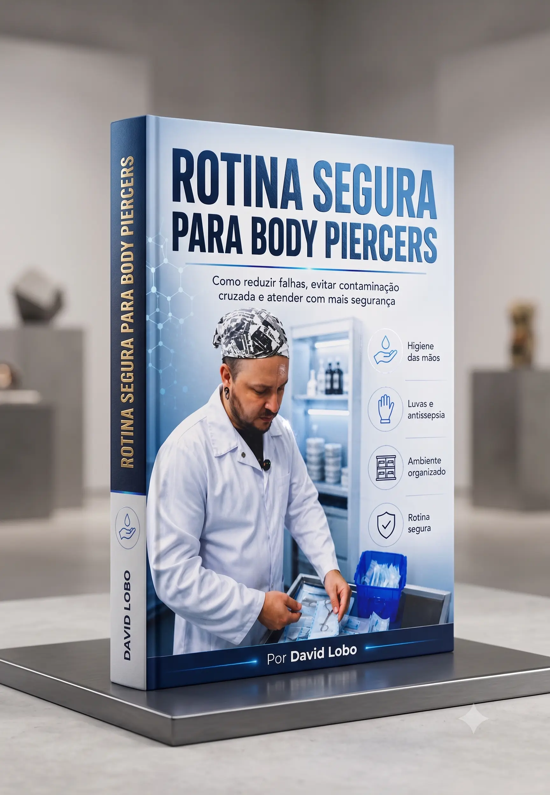

Descubra o protocolo que piercers profissionais seguem em cada atendimento, mesmo que você ainda esteja construindo sua base técnica.
Quero acessar o protocolo
O problema não é falta de vontade. É que a maioria aprendeu observando outros profissionais, sem um protocolo claro de biossegurança.
Pequenos erros no uso de barreiras, luvas e organização podem passar despercebidos.
Cada atendimento depende da memória, aumentando as chances de esquecer etapas.
Muitos profissionais não sabem se estão realmente preparados.
Eles começam com pequenas etapas ignoradas, hábitos repetidos e uma rotina que nunca foi organizada de forma profissional.
Uma barreira criada para proteger pode virar um caminho de contaminação quando usada incorretamente.
Quando cada atendimento depende da memória, algumas etapas acabam ficando para trás.
Um profissional organizado transmite mais confiança e segurança ao cliente.
Profissionais que transmitem confiança não dependem apenas de experiência. Eles seguem uma rotina clara antes, durante e depois de cada atendimento.
Uma sequência organizada para você não depender apenas da memória.
Identifique pontos críticos antes que eles virem problemas.
Mostre ao cliente que existe método por trás do seu atendimento.
Transforme a biossegurança em uma rotina clara, sem depender de memória ou improviso.
Organize ambiente, bancada e materiais antes do atendimento começar.
Controle higiene das mãos, luvas e barreiras de proteção.
Mantenha uma sequência segura durante todo o procedimento.
Faça descarte, limpeza e organização para o próximo atendimento.
Tudo organizado para você parar de depender de improviso e seguir uma sequência mais segura.
20 capítulos explicando os pontos críticos da rotina do piercer.
Uma sequência organizada para reduzir falhas durante o atendimento.
Identifique os pontos onde pequenos erros comprometem a segurança.
Uma revisão prática para organizar seu padrão profissional.
Além do guia principal, você recebe ferramentas práticas para organizar processos, reduzir falhas e trabalhar com mais segurança no dia a dia.
Guia completo com 20 capítulos para organizar sua rotina antes, durante e depois dos atendimentos.
R$97Linha Vermelha, Amarela e Verde para revisar pontos importantes do seu ambiente profissional.
R$27Controle de estoque, alertas de reposição e acompanhamento de validade dos materiais.
R$47Ficha de atendimento, TCLE maior e TCLE menor para elevar o padrão do seu atendimento.
R$67Uma sequência organizada para preparar e finalizar seus atendimentos.
R$27Mapas de testes químicos e biológicos, registro de ciclos, rastreabilidade e instruções de preenchimento.
R$97Somando todos os materiais:
Você terá acesso ao guia completo e todas as ferramentas complementares para organizar sua rotina de biossegurança.
Mas você não precisa investir esse valor para começar a aplicar uma rotina mais profissional.
Tenha acesso ao Rotina Segura para Body Piercers e todos os materiais complementares para aplicar um padrão mais organizado no seu atendimento.
De R$362
Hoje você recebe tudo por:
Acesso completo + todos os bônus
Quero acessar agora🔒 Pagamento seguro • Acesso imediato
Depender apenas da memória, repetir hábitos antigos e esperar que pequenos erros nunca tragam problemas.
Organizar seus processos, transmitir mais confiança e trabalhar com um padrão mais seguro em cada atendimento.
A diferença entre um atendimento comum e um atendimento
profissional muitas vezes está nos detalhes que ninguém vê.
A pergunta é:
qual padrão você quer construir daqui para frente?
Tenha acesso ao método Rotina Segura para organizar seus atendimentos, reduzir falhas e trabalhar com mais confiança.
Separei as principais perguntas que podem surgir antes de você ter acesso ao Rotina Segura.
Sim. Ele foi criado para ajudar novos profissionais a construírem uma base segura desde os primeiros atendimentos. Também é indicado para quem já atende e deseja revisar sua rotina.
Sim. Muitos profissionais aprendem a técnica, mas nunca tiveram uma rotina organizada de biossegurança. O material ajuda a identificar pontos de melhoria e criar um padrão profissional.
Não. O objetivo do Rotina Segura é justamente transformar a biossegurança em uma sequência clara, prática e aplicável.
Após a confirmação do pagamento, você recebe acesso ao material digital para consultar quando precisar.
Não. Ele é um guia prático focado em organização de rotina, biossegurança e melhoria dos processos do piercer.